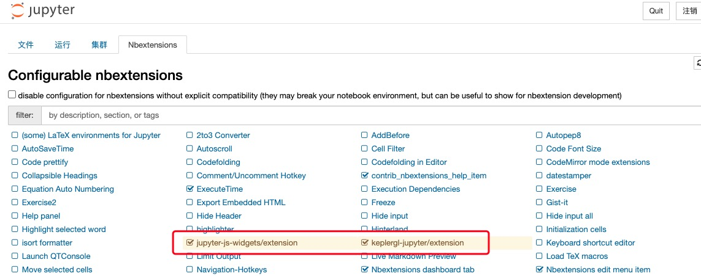

数据可视化¶
在jupyter中显示可视化的设置¶
TransBigData包也依托于kepler.gl提供的可视化插件提供了一键数据整理与可视化的方法
使用此功能请先安装python的keplergl包
pip install keplergl
如果要在jupyter notebook中显示可视化，则需要勾选jupyter-js-widgets（可能需要另外安装）和keplergl-jupyter两个插件
数据点分布可视化¶
-
transbigdata.visualization_data(data, col=['lon', 'lat'], accuracy=500, height=500, maptype='point', zoom='auto')¶
输入数据点，集计并可视化
输入
- dataDataFrame
数据点分布
- colList
列名，可输入不带权重的OD，按[经度，纬度]的顺序，此时会自动集计。 也可输入带权重的OD，按[经度，纬度，数量]的顺序。
- zoomnumber
地图缩放等级,默认’auto’自动选择
- heightnumber
地图图框高度
- accuracynumber
集计的栅格大小
- maptypestr
出图类型，’point’或者’heatmap’
输出
- vmapkeplergl.keplergl.KeplerGl
keplergl提供的可视化
使用方法:
import transbigdata as tbd
import pandas as pd
#读取数据
data = pd.read_csv('TaxiData-Sample.csv',header = None)
data.columns = ['VehicleNum','Time','Lng','Lat','OpenStatus','Speed']
#可视化数据点分布
tbd.visualization_data(data,col = ['Lng','Lat'],accuracy=300)
轨迹可视化¶
-
transbigdata.visualization_trip(trajdata, col=['Lng', 'Lat', 'ID', 'Time'], zoom=10, height=500)¶
输入轨迹数据与列名，生成kepler的可视化
输入
- trajdataDataFrame
轨迹点数据
- colList
列名，按[经度,纬度,轨迹编号,时间]的顺序
- zoomnumber
地图缩放等级
- heightnumber
地图图框高度
输出
- vmapkeplergl.keplergl.KeplerGl
keplergl提供的可视化
使用方法
import transbigdata as tbd
import pandas as pd
#读取数据
data = pd.read_csv('TaxiData-Sample.csv',header = None)
data.columns = ['VehicleNum','Time','Lng','Lat','OpenStatus','Speed']
#轨迹数据可视化
tbd.visualization_trip(data,col = ['Lng', 'Lat', 'VehicleNum', 'Time'])

OD可视化¶
-
transbigdata.visualization_od(oddata, col=['slon', 'slat', 'elon', 'elat'], zoom='auto', height=500, accuracy=500, mincount=0)¶
输入od数据与列名，生成kepler的可视化
输入
- oddataDataFrame
od数据
- colList
列名，可输入不带权重的OD，按[起点经度，起点纬度，终点经度，终点纬度]的顺序，此时会自动集计。 也可输入带权重的OD，按[起点经度，起点纬度，终点经度，终点纬度，数量]的顺序。
- zoomnumber
地图缩放等级,默认’auto’自动选择
- heightnumber
地图图框高度
- accuracynumber
集计的栅格大小
- mincountnumber
最小的od数，少于这个的od就不显示了
输出
- vmapkeplergl.keplergl.KeplerGl
keplergl提供的可视化
使用方法
import transbigdata as tbd
import pandas as pd
#读取数据
data = pd.read_csv('TaxiData-Sample.csv',header = None)
data.columns = ['VehicleNum','Time','Lng','Lat','OpenStatus','Speed']
#提取OD
oddata = tbd.taxigps_to_od(data,col = ['VehicleNum','Time','Lng','Lat','OpenStatus'])
#OD可视化
tbd.visualization_od(oddata)